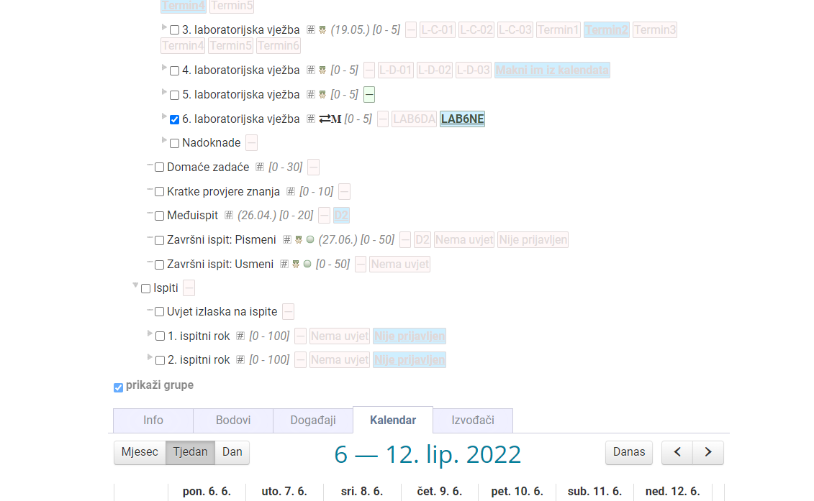
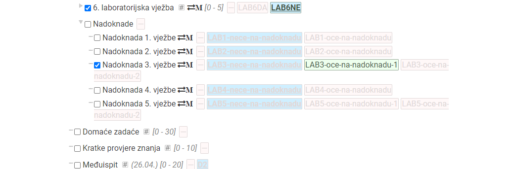

jel se sjeca neko kaj se dogada ako ne mozemo doc na neki labos? na sljedecem odgovaramo i taj koji smo propustili?
menace_master na kraju semestra je termin za nadoknade
Zna li itko sto ce biti u 2. Blicu. Ili bar do kud je prof stigo sa skriptom na predavanjima
Što se radilo na predavanju prošli tjedan?
Zna neko sta smo radili prosli put na predavanju ili sta ce bit u blicu
steker Blicevi su 26.5. i 9.6., a zadatci su vezani uz gradivo obradeno na 2 predavanja prije blica. Na proslom predavanju je obradio Upravljanje vremenom
tempest tenks. Al nisam bila na predavanjima pa ak ti ne bi bio problem rec koja su u tocno
steker steker
Dokle je obradeno gradivo ovaj tjedan?
Valentino Na ploči je cijeli prvi i dio drugog sata rješavao programske zadatke iz upravljanja vremenom. U ostatku drugog sata je prošao 10. cjelinu o naredbenoj ljusci.
std::popcount hvala lepa
Jel se mora svaki labos doc uzivo obranit ili? Dva termina sam propustila, a znam da mogu samo jedan nadoknadit. Pa me zanima dal to znaci da se mogu pozdravit s predmetom do sljedece godine?
steker To mi se čini kao pitanje na koje će samo Jelenković znati odgovoriti. 😕
Ako iz jedne vježbe na predaji baš nisam riješio zadatak, ali sam tu zadaću predao i svejedno dobio neke bodove za predaju, a iz zadaće 2/2. Da li onda trebam nadoknađivat tu vježbu?
Zna neko koje gradivo bi sutra moglo bit na blicu
tempest hvala
Gdje se ja točno prijavim za ovu nadoknadu?
BigZ1 na ferwebu
steker dap al evo gledam i nije mi jasno sta sad 
BigZ1 i jesam ja sad to prijavio? 